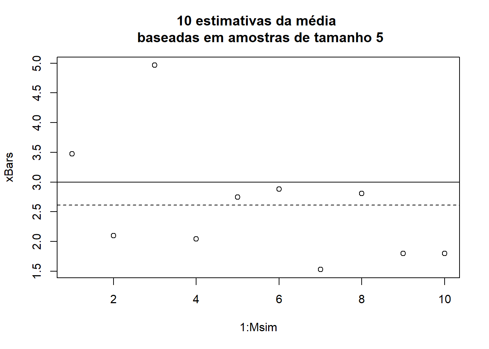
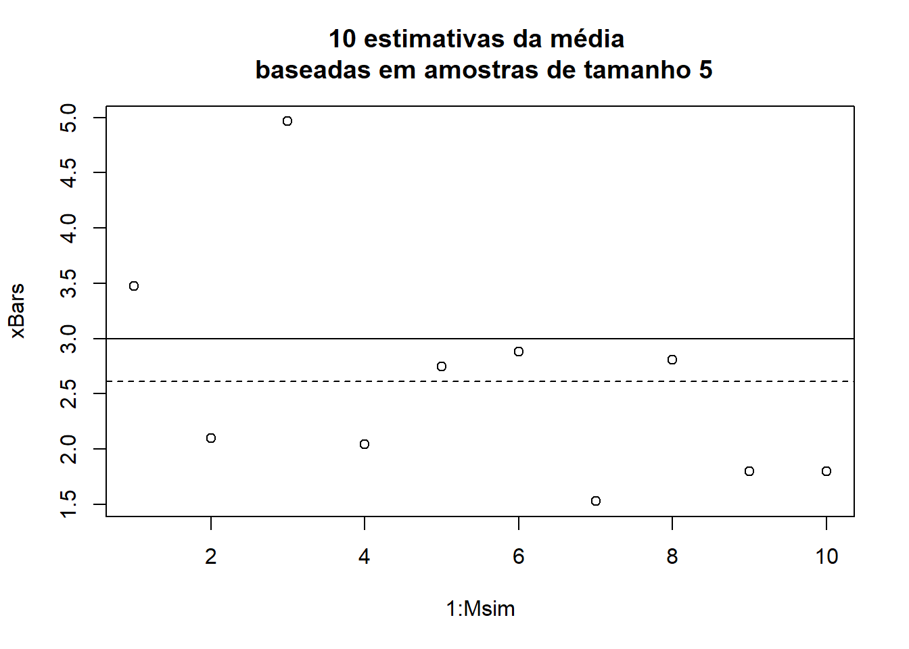
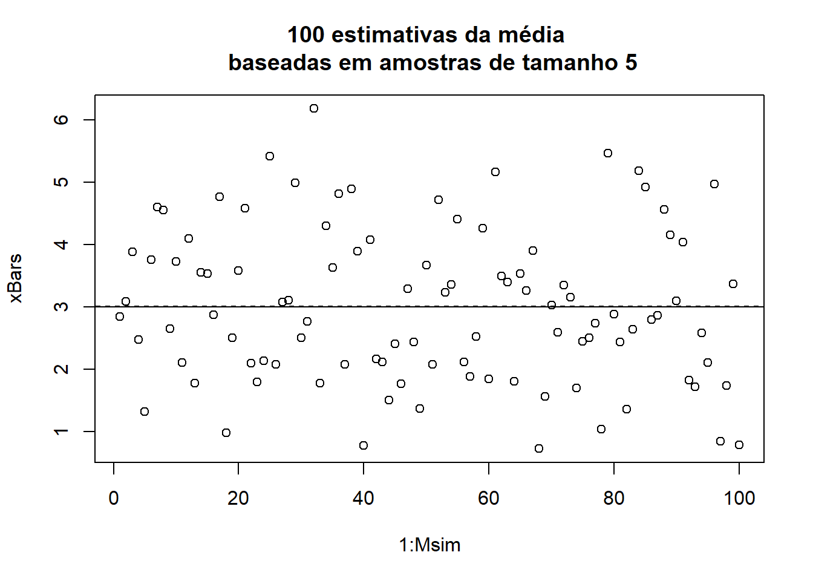
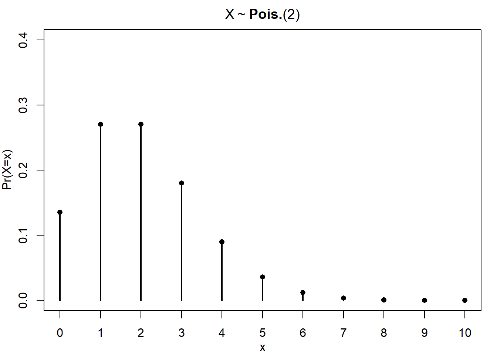
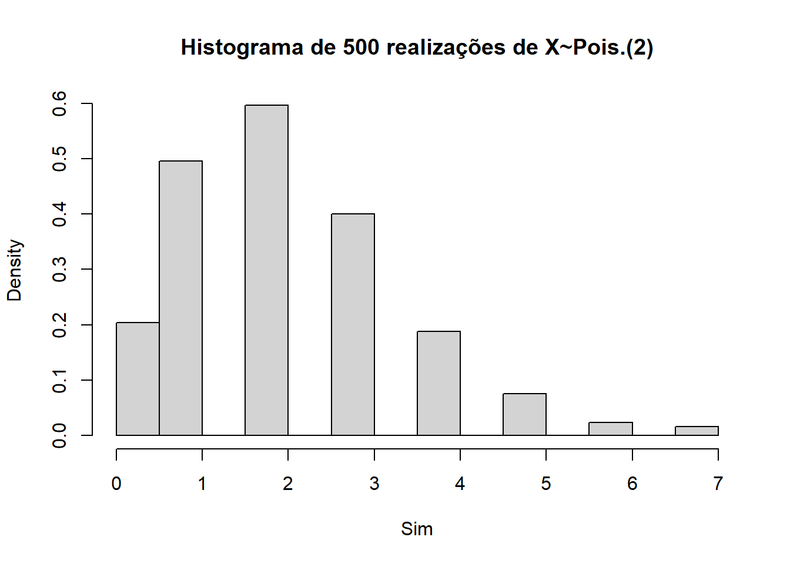
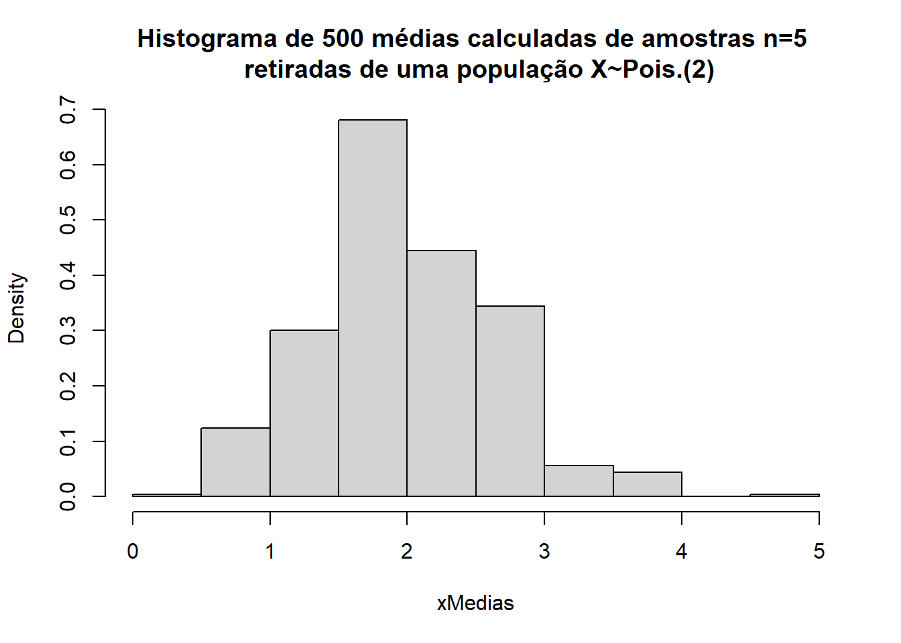
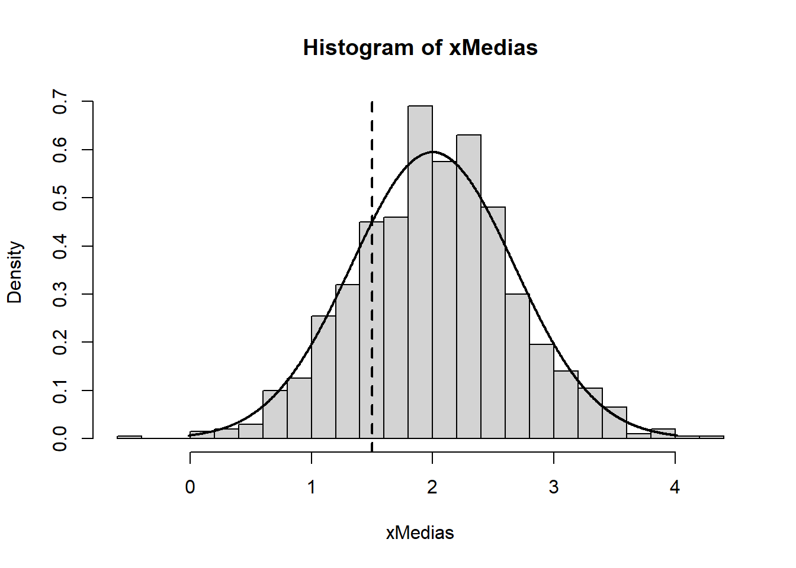
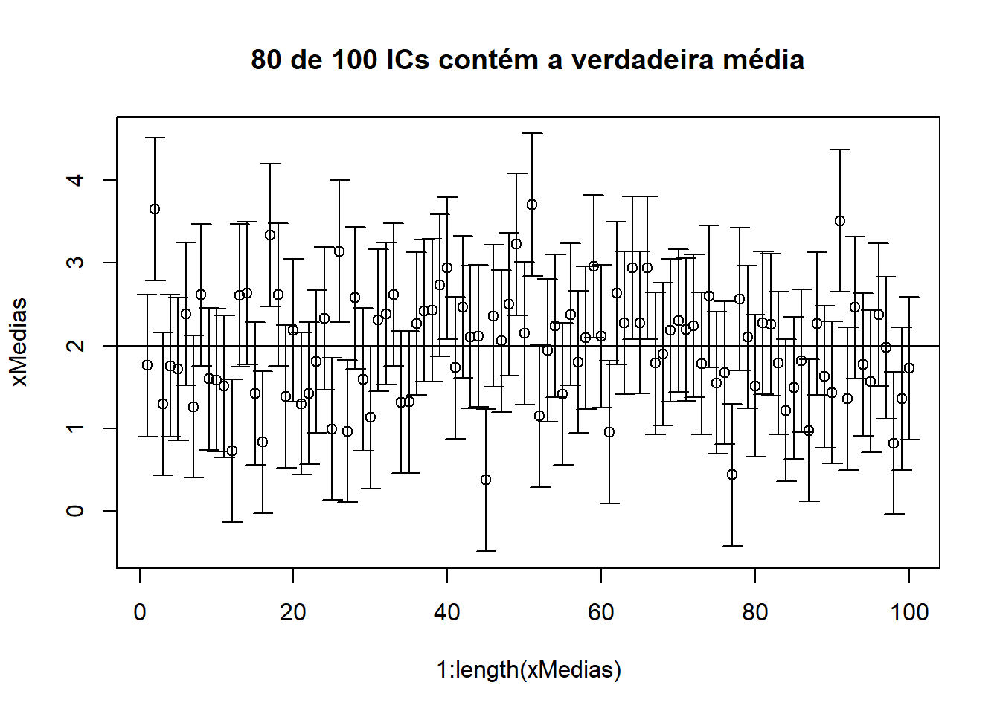

beta = 5
n = 10
Msim = 20
xBars = rep(0,Msim)
for (j in 1:Msim){
xBars[j] = mean(rexp(n, rate=1/beta))
}
plot(1:Msim, xBars)
abline(h=beta)
abline(h=mean(xBars), lty=2)
Até agora estávamos trabalhando um espaço de probabilidades \(\left(\Omega, \mathcal F, f(x;\theta)\right)\) completamente definido que nos permite computar probabilidades sobre eventos definidos no universo de possíveis resultados \(\Omega\).
Agora vamos nos concentrar no problema inverso. Vamos observar realizações de uma certa variável aleatória, uma amostra finita \[\begin{align*} x = \{x_1,x_2,\dots,x_n\}. \end{align*}\] Essas realizações foram sorteadas de uma população \(X\), cuja distribuição de probabiliades é desconhecida.
Com base nas informações da amostra, tentaremos recuperar informações (por exemplo valor de parâmetros) sobre o modelo (o espaço de probabilidades) que gerou esses dados.
As variáveis aleatórias \(X_1,\dots,X_n\) são chamadas de amostra aleatória de tamanho \(n\) de uma população \(f(x)\) se
Alternativamente, podemos dizer que \(X_1,\dots,X_n\) são variáveis aleatórias independentes e identicamente distribuídas com fdp ou fmp \(f(x)\). Daí abreviamos como variáveis aleatórias iid.
Uma estatística é qualquer função baseada nos valores da amostra (e da quantidade de observações nessa amostra).
Suponha que observamos uma amostra aleatória \(x= \{x_1,\dots, x_n\}\). São exemplos de estatísticas
Tome a média amostral \(\bar x\). \[\begin{align*} \bar x = \frac{x_1 + x_2 + \dots + x_n}{n} \end{align*}\] Ela é uma função das realizações da variável aleatória \(X\), portanto também é uma variável aleatória por si própria (com características potencialmente diferentes da população original \(X\)).
Seja \(x=\{X_1, X_2, \dots, X_n\}\) uma amostra aleatória retirada de uma população \(X\) com média \(\mu\) e variância \(\sigma^2\). A média amostral é \[\begin{align*} \bar X = \frac{X_1 + X_2 + \dots + X_n}{n}. \end{align*}\] Estamos interessados no valor esperado da média amostral \[\begin{align*} E(\bar X) = E\left(\frac{X_1 + X_2 + \dots + X_n}{n}\right) \end{align*}\] Lembrando que \(E(Y+W)=E(Y)+E(W)\) e que \(E(aY)=aE(Y)\), podemos escrever \[\begin{align*} E(\bar x) = \frac{1}{n}\left[E(X_1)+E(X_2)\dots E(X_n)\right]. \end{align*}\] Agora usamos o fato de \(x\) ser uma amostra aleatória e todos os \(X_j\) terem sido sorteados da mesma distribuição de probabilidades. Ou seja, \(E(X_1)=E(X_2)=\dots=E(X_n)=\mu\). \[\begin{align*} E(\bar X) &= \frac{1}{n}\left[E(X_1)+E(X_2)\dots E(X_n)\right] \\ &=\frac{1}{n}(\mu+\mu+\dots+\mu) = \frac{n\mu}{n} = \mu \end{align*}\] Portanto o valor esperado da média amostral é a verdadeira média populacional.
beta = 5
n = 10
Msim = 20
xBars = rep(0,Msim)
for (j in 1:Msim){
xBars[j] = mean(rexp(n, rate=1/beta))
}
plot(1:Msim, xBars)
abline(h=beta)
abline(h=mean(xBars), lty=2)
Agora estamos interessados na variância da média amostral \(Var(\bar X)\). Aqui iremos observar uma diferença crucial quando comparada à variância populacional \(Var(X)=\sigma^2\).
\[\begin{align*} Var(\bar X) &= Var\left(\frac{X_1+X_2+\cdots X_n}{n}\right) \\ &=\frac{1}{n^2}Var\left(X_1+X_2+\cdots X_n\right) \end{align*}\] Para duas variáveis aleatórias quaisquer, \(Var(Y+W)=Var(Y)+Var(W)+2Cov(Y,W)\). Como \(\{X_1,X_2,\dots,X_n\}\) é uma amostra aleatória, \(X_i\) é independente de \(X_j\) para \(i\neq j\), portanto \(Cov(X_i,X_j)=0\). \[\begin{align*} Var(\bar X) = \frac{1}{n^2}\left[Var(X_1)+Var(X_2)+\cdots+Var(X_n)\right] \end{align*}\] Como a amostra é identicamente distribuida, \(Var(X_1)=Var(X_2)=\cdots=Var(X_n)=\sigma^2\). E temos \[\begin{align*} Var(\bar X) = \frac{1}{n^2}\left(\sigma^2+\sigma^2+\cdots+\sigma^2\right) = \frac{n\sigma^2}{n^2} = \frac{\sigma^2}{n} \end{align*}\]
Portanto a variância da média amostral é a verdadeira variância populacional, dividida pelo tamanho da amostra. Quanto maior o tamanho amostral, menos variável vai ser a estimativa da média.

Vamos simular uma amostra aleatória de tamanho \(n=500\), retirada de uma distribuição Poisson com parâmetro \(\lambda=2\) e, construir o histograma normalizado. Essa é uma aproximação da distribuição populacional da variável aleatória \(X\sim Pois.(\lambda)\).
1lambda = 2
2n = 500
3Sim = rpois(n, lambda)
4main = paste("Histograma de ",n," realizações de X~Pois.(",lambda,")",sep="")
hist(Sim, prob=T, main=main)rpois().

Agora vamos simular 500 amostras com tamanho \(n=5\), computar a média amostral para cada amostra, e construir o histograma dessas estimativas da média.
1lambda = 2
2n = 5
3NSim = 500
4xMedias = vector(length=NSim)
5for (j in 1:NSim){
Sim = rpois(n, lambda)
xMedias[j] = mean(Sim)
}
6main=paste("Histograma de ",NSim," amostras com tamanho n=",n," \n retiradas de uma população X~Pois.(",lambda,")",sep="")
plt1 = hist(xMedias, prob=T,main=main)
Repare que a forma do histograma das estimativas \(\bar x\) é diferente da forma do histograma das realizações individuais \(x\). Notadamente o gráfico é menos assimétrico.
Agora vamos repetir esse exercício para diferentes tamanhos amostrais \(n\). Quanto maior \(n\), mais a distribuição de \(\bar x\) irá se aproximar de algo simétrico ao redor da verdadeira média \(E(X)\).
1nvec = c(3,5,10,20,50,100,200,500,1000)
2par(mfrow=c(3,3))
3for (j in 1:(3*3)){
4 for (i in 1:NSim){
Sim = rpois(nvec[j], lambda)
xMedias[i] = mean(Sim)
}
5 hist(xMedias, prob=T, xlab='',ylab='', main=paste("n=",nvec[j]))
}nvec[j]

Repita o exercício de simulação de estimativas da média acima para diferentes distribuições de probabilidade.
I know of scarcely anything so apt to impress the imagination as the wonderful form of cosmic order expressed by the the law of frequency of error. The law would have been personified by the Greeks and deified, if they had known of it. It reigns with serenity and in complete self-effacement, amidst the wildest confusion. The huger the mob, and the greater the apparent anarchy, the more perfect is its sway. It is the supreme law of Unreason. Whenever a large sample of chaotic elements are taken in hand and marshaled in the order of their magnitude, an unsuspected and most beautiful form of regularity proves to have been latent all along. (Sir Francis Galton, 1889, Natural Inheritance.)
Da discussão anterior nós percebemos que
Para amostras aleatórias simples [iid] \((X_1,\dots,X_n)\) retiradas de uma população com média \(\mu\) e variância \(\sigma^2\) finita, a distribuição amostral da média \(\bar X\) aproxima-se, para \(n\) grande, de uma distribuição normal, com média \(\mu\) e variância \(\sigma^2/n\). \[\begin{align*} \lim_{n\rightarrow\infty} \bar X_n \sim N(\mu, \sigma^2/n). \end{align*}\]
Sempre podemos padronizar uma variável aleatória para obter algo com média zero e variância 1. Dessa forma só precisamos consultar os quantis de uma distribuição Normal Padrão, \(N(0,1)\).
Se \((X_1,\dots, X_n)\) for uma amostra aleatória simples da população \(X\) com média \(\mu\) e variância \(\sigma^2\) finita, e \(\bar X = (X_1+\cdots+X_n)/n\), então para valores grandes de \(n\) \[\begin{align*} Z = \frac{\bar X-\mu}{\sigma/\sqrt{n}}\sim N(0,1). \end{align*}\]
Quando a variável aleatória em si tem distribuição Normal, o TLC vale exatamente para qualquer tamanho amostral \(n\). Isso vem do fato da soma de v.a.s Normais ter distribuição Normal.
Retiramos uma amostra aleatória de tamanho \(n=20\) de uma variável aleatória Normal \(X\sim N(2,3^2)\). Qual é a probabilidade de que \(\bar x>1.5\)?
Nesse caso \(\bar X \sim N(\mu,\sigma^2/n)\), ou seja \[ \bar X \sim N\left(2,\frac{3^2}{20}\right) \] Queremos \(\Pr(\bar X>1.5)\). Portanto \[ \gamma = \Pr(\bar X>1.5) = 1-\Pr(\bar X\leq1.5) \] No R podemos calcular diretamente.
1-pnorm(1.5,mean=2,sd=3/sqrt(20))[1] 0.7719717Para trabalhar com a Normal Padrão devemos operar a desigualdade para padronizar \(X\). \[\begin{align*} \gamma &= 1-\Pr(\bar X \leq 1.5) \\ &= 1-\Pr\left(\frac{\bar X-\mu}{\sigma/\sqrt{n}}\leq \frac{1.5-2}{3/\sqrt{20}}\right) \\ & = 1-\Pr(Z\leq-0.745) \end{align*}\]
1-pnorm(-0.745)[1] 0.7718641Ainda não conseguiriamos consultar na tabela da distribuição Normal Padrão. Da simetria da Normal, podemos escrever
\[\begin{align*}
\gamma &= 1-\Pr(Z\leq-0.745)=1-\Pr(Z>0.745) \\
&=1-(1-\Pr(Z\leq 0.745)) = \Pr(Z\leq 0.745)
\end{align*}\]
pnorm(0.745)[1] 0.7718641mu = 2
sigma = 3
n = 20
Msim = 100
xMedias = rep(0,Msim)
for (jsim in 1:Msim){
sim = rnorm(n, mean=mu, sd=sigma)
xMedias[jsim] = mean(sim)
}
xcrit = 1.5
mean(xMedias>xcrit)[1] 0.82
Ao saber a distribuição de amostragem de um determinado estimador \(T\) (como a média amostral \(\bar X\)), podemos construir um intervalo de confiança para o parâmetro populacional desconhecido \(\theta\).
O objetivo será obter \(a<b\) tais que \[\begin{align*} \Pr(a\leq \theta \leq b) = \gamma, \end{align*}\] onde \(\gamma\) é o nível de confiança do intervalo.
Seja \(y = \{Y_1,Y_2,\dots,Y_n\}\) uma amostra aleatória retirada da população \(Y\) cuja verdadeira média é desconhecida.
Sabemos da discussão sobre a distribuição da média amostral que \(E(\bar Y)=\mu\), e \(Var(\bar Y)=\sigma^2/n\). O TLC nos garante que, conforme \(n\) cresce, \[\begin{align*} \bar Y \sim N(\mu, \sigma^2/n) \end{align*}\]
Então a transformação \[\begin{align*} Z = \frac{\bar Y - \mu}{\sigma/\sqrt{n}} \end{align*}\] tem média zero e variância 1. Ou seja, \[\begin{align*} Z \sim N(0,1). \end{align*}\]
Escreva \[\begin{align*} \Pr(-c \leq Z \leq c) = \gamma \end{align*}\]
Perceba que \(c=\Phi^{-1}\left(\frac{1+\gamma}{2}\right)\) ou qnorm((1-gamma)/2).
\[\begin{align*} \Pr\left(-\Phi^{-1}\left(\frac{1+\gamma}{2}\right) \leq \frac{\bar X-\mu}{\sigma/\sqrt{n}}\leq\Phi^{-1}\left(\frac{1+\gamma}{2}\right)\right) = \gamma \end{align*}\]
Isolando o parâmetro \(\mu\) entre as desigualdades, obtemos o intervalo de confiança para a média populacional.
Se \(x=\{x_1,\dots,x_n\}\) é uma amostra aleatória retirada de uma população \(X\) com média \(\mu\) desconhecida e variância \(\sigma^2\) conhecida, então \[\begin{align*}
\Pr\left(\bar x - \frac{\sigma}{\sqrt{n}} \Phi^{-1}\left(\frac{1+\gamma}{2}\right) \leq \mu \leq \bar x + \frac{\sigma}{\sqrt{n}} \Phi^{-1}\left(\frac{1+\gamma}{2}\right)\right) = \gamma
\end{align*}\] LimInf = xbar - (sigma/sqrt(n))*qnorm((1-gamma)/2)
LimSup = xbar + (sigma/sqrt(n))*qnorm((1-gamma)/2)
Uma máquina enche pacotes de café com uma variância igual a 100 \(g^2\). Ela estava regulada para encher os pacotes com 500 g, em média. Agora, ela se desregulou, e queremos saber qual a nova média \(\mu\).
Uma amostra de 25 pacotes apresentou uma média igual a 485 g. Vamos construir um intervalo de confiança, nível de confiança de \(\gamma=95\%\) para \(\mu\).
gamma = 0.95
n = 25
xbar = 485
sigma=sqrt(100)
IC = c(xbar-(sigma/sqrt(n))*qnorm((1+gamma)/2),
xbar+(sigma/sqrt(n))*qnorm((1+gamma)/2))
IC[1] 481.0801 488.91991mu = 2
sigma = 3
2n = 20
3conf.level = 0.8
MSim = 10
xMedias = rep(0,MSim)
for (jsample in 1:MSim){
sim = rnorm(n,mean=mu,sd=sigma)
xMedias[jsample] = mean(sim)
}
IC = matrix(ncol=2,nrow=MSim)
IC[,1] = xMedias-(sigma/sqrt(n))*qnorm((1+conf.level)/2)
IC[,2] = xMedias+(sigma/sqrt(n))*qnorm((1+conf.level)/2)
require(dplyr)
non.viol = sum(dplyr::between(rep(mu,MSim),IC[,1],IC[,2]))
require(plotrix)
plotrix::plotCI(1:length(xMedias),xMedias,ui=IC[,2], li=IC[,1],
main=paste(non.viol,"de",length(xMedias),"ICs contém a verdadeira média"))
abline(h=mu)
A Lei Fraca dos Grandes Números (LFGN) garante que a estimativa da média amostral \(\bar x\), calculada a partir de amostras amostras aleatórias de tamanho \(n\) da população original, vai se aproximar cada vez mais da verdadeira média populacional \(\mu\) conforme \(n\) cresce.
Seja \(X_1,X_2,\dots\) uma sequência de variáveis aleatórias iid com \(E(X_i)=\mu\) e \(Var(X_i)=\sigma^2<\infty\). Defina \(\bar X_n=(1/n)\sum^n_{i=1}X_i\). Então, para todo \(\epsilon>0\), \[\begin{align*} \lim_{n\rightarrow\infty} \Pr(|\bar X_n - \mu| < \epsilon) = 1. \end{align*}\]
Uma variável aleatória \(C\) com distribuição Chi-quadrado \(\chi^2(v)\) e \(v\) “graus de liberdade” é definida como a soma de \(v\) Normais Padrão independentes. (Obs.: É relacionada com a distribuição da variância amostral.) \[ C = z^2 + z^2 + \cdots + z^2 \sim \chi^2(v) \] É direto ver que \(E(C)=v\) e \(Var(C)=2v\) (use \(E(Z^4)=3\)).
Vamos simular amostras aleatórias de uma v.a. Qui-quadrado com diferentes tamanhos e observar o comportamento das estimativas da média e variância.
nmax = 10000
nmin = 50
ngrid = seq(from=nmin,to=nmax,by=50)
v = 3
Sim = rchisq(nmax,df=3)
cMeans = rep(0,length(ngrid))
j = 1
for (nobs in ngrid){
cMeans[j] = mean(Sim[1:nobs])
j = j+1
}
plot(ngrid, cMeans, t='l')
abline(h=v)A variância de uma variável aleatória é definida como \[ Var(X)=E[(X-E(X))^2]. \] Repare que se definirmos \(Y=(X-E(X))^2\) então \(Var(X)=E(Y)\). Portanto a LGN também se aplica às estimativas da variância.
j = 1
cVars = rep(0,length(ngrid))
for (nobs in ngrid){
cVars[j] = var(Sim[1:nobs])
j = j+1
}
plot(ngrid, cVars, t='l')
abline(h=2*v)De modo geral, a LGN vai garantir a consistência dos estimadores dos momentos \(E(X^k)\) contanto que o momento em si seja bem definido. Isto é, \(E(X^k)<\infty\).
Uma variável aleatória \(T\) com distribuição t-Student e \(m\) graus de liberdade tem função densidade de probabilidade \[\begin{align} f_T(t;m) = \frac{\Gamma\left(\frac{m+1}{2}\right)}{\sqrt{m\pi}\Gamma\left(\frac{m}{2}\right)}\left(1+\frac{t^2}{m}\right)^{-\left(\frac{m+1}{2}\right)}, \quad -\infty<t<\infty. \end{align}\] A t-Student é muito relacionada com a distribuição da média amostral quando a verdadeira variância populacional é desconhecida. Conforme os graus de liberdade \(m\) crescem, a distribuição t-Student se aproxima cada vez mais de uma Normal Padrão.
Usualmente, \(E(T)=0\) e \(Var(T)=m/(m-2)\). Mas o k-ésimo momento \(E(T^k)\) só é bem definido se \(k\leq m\).
Neste exemplo estamos interessados no caso com \(m=1\) grau de liberdade. \[\begin{align} f_T(t;1) = \frac{\Gamma\left(1\right)}{\sqrt{\pi}\Gamma\left(\frac{1}{2}\right)}\left(1+t^2\right)^{-1}, \quad -\infty<t<\infty. \end{align}\] Sabendo que \(\Gamma(1/2)=\sqrt{\pi}\) e \(\Gamma(1)=1\), \[\begin{align} f_T(t;1) = \frac{1}{\pi(1+t^2)}, \quad -\infty<t<\infty. \end{align}\] Como \(\text{E}(T)\) se \(T\sim t(1)\) não é bem definido, o estimador da média amostral não converge para nenhum valor específico.
set.seed(1729)
NMax = 1000
Smpl1 = rt(NMax, df=1)
Smpl2 = rt(NMax, df=1)
XBar1 = cumsum(Smpl1)/1:NMax
XBar2 = cumsum(Smpl2)/1:NMax
Mesmo se aumentarmos o tamanho da amostra para 100000, não nos aproximamos de nenhum valor particular. Note também que embora as estimativas se mantenham relativamente estáveis por grandes “períodos”, eventualmente uma realização tão extrema será sorteada e impactará desproporcionalmente a estimativa.